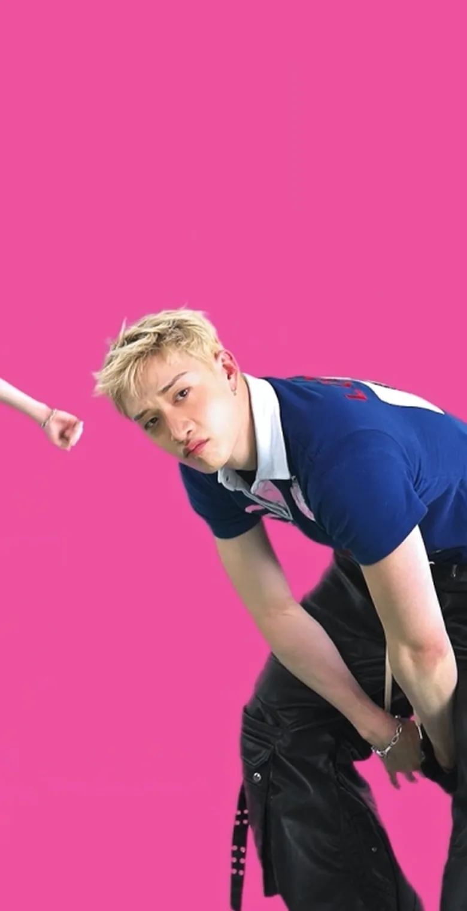
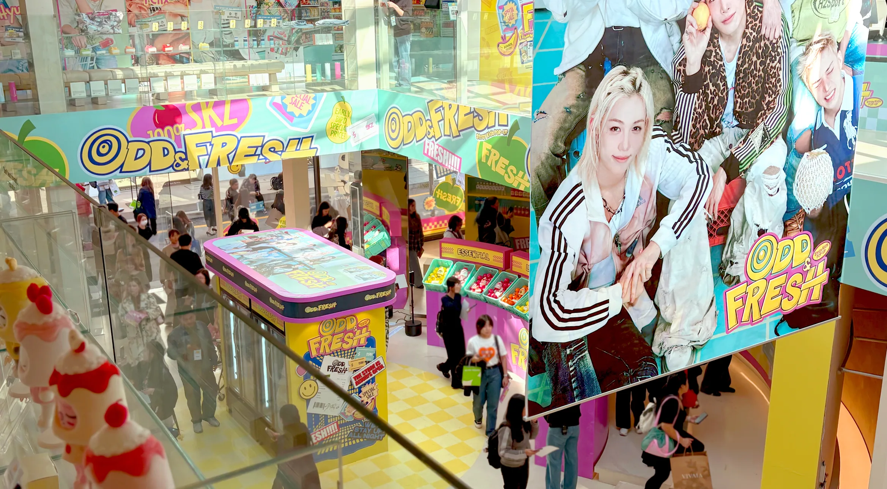
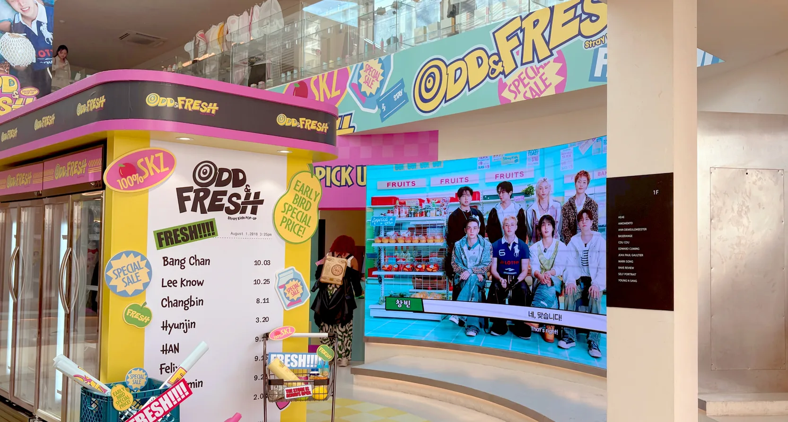
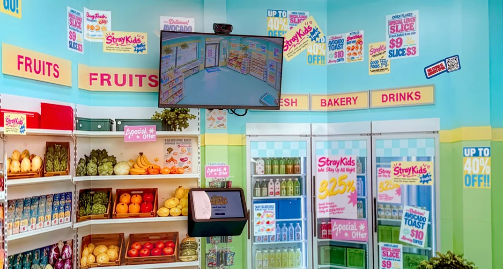
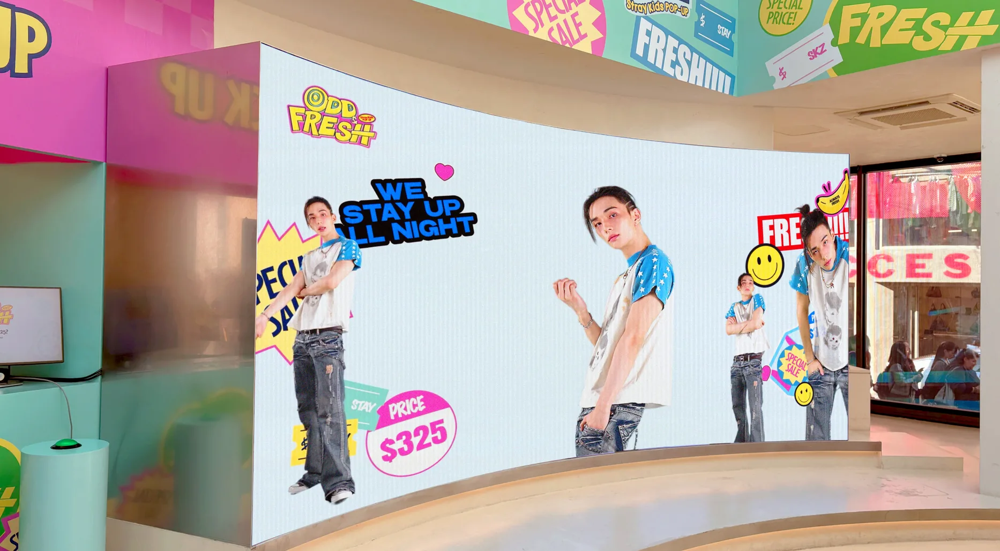
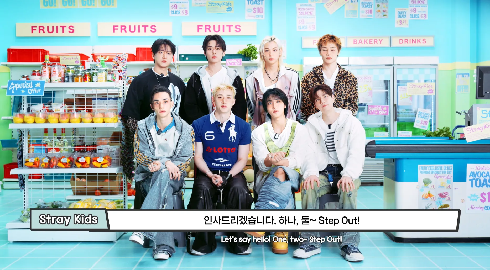
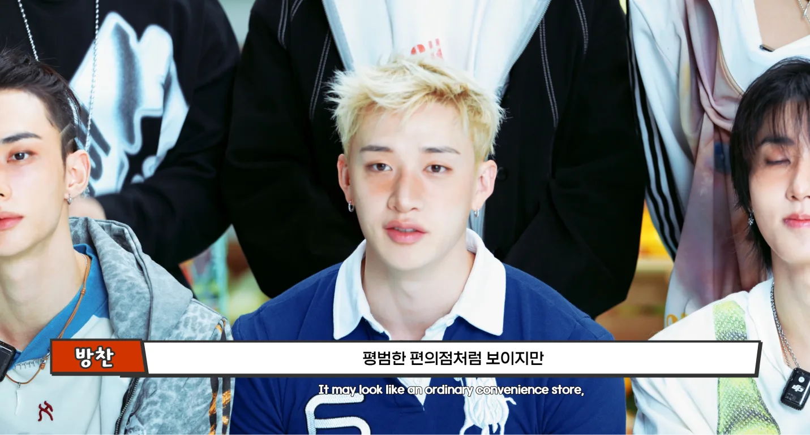
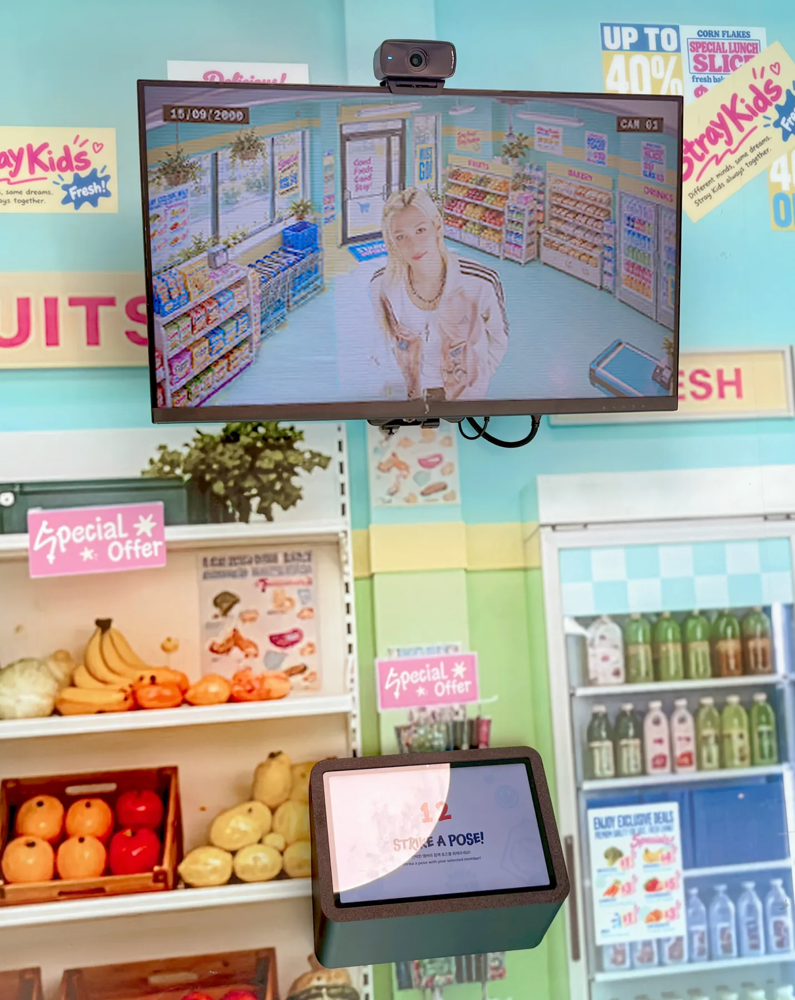
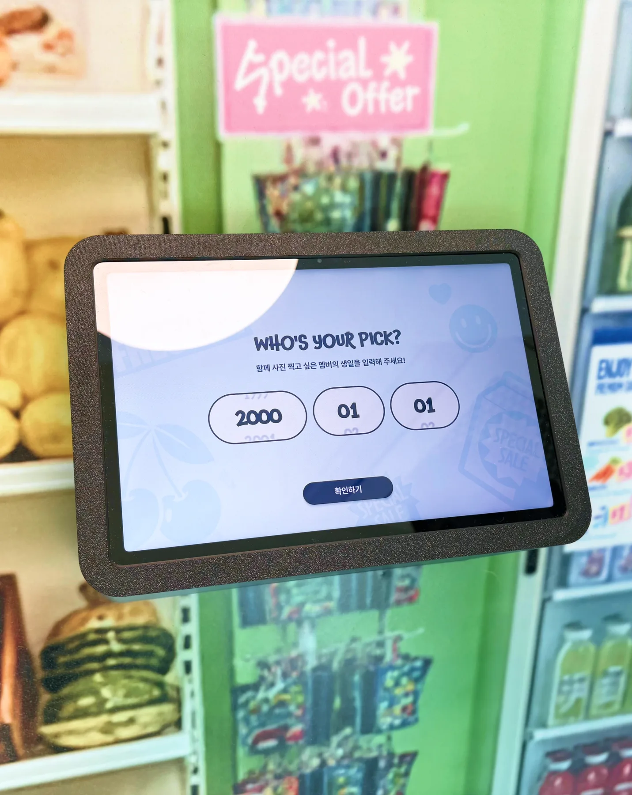

Stray Kids Pop-up
Content Production
From Screen To Experience
Stray Kids 오프라인 팝업을 위한 다양한 디지털 영상 콘텐츠를 제작했습니다.
공간 내 대형 스크린 영상부터 팬들이 아티스트와 함께 사진을 촬영할 수 있는 참여형 콘텐츠까지,
팝업 공간의 특성을 고려해 팬들의 경험을 확장시키는 다양한 비주얼을 구현했습니다.Stray Kids 오프라인 팝업을 위한
디지털 영상 콘텐츠를 제작했습니다.
공간을 채우는 대형 스크린 영상부터
팬들이 아티스트와 함께 사진을 찍는
참여형 콘텐츠까지, 팝업 공간에 맞춰
머무는 경험을 넓히는 비주얼을 만들었습니다.PL2 produced content for the Stray Kids pop-up, including large-scale screen visuals,
member interviews, and interactive photo experiences.
Each piece was tailored to the exhibition space, keeping visitors engaged throughout the event.We created digital video content
for a Stray Kids offline pop-up.
From videos filling giant screens
to interactive photo moments
with the artists, every visual
was built for the space
and the fans in it.
콘텐츠가 실제 공간과 만나는 순간Bringing Content into the Space
스크린 속 영상이 실제 공간과 만나며, 팬들이 아티스트를 경험하는 방식도 확장됩니다.
팝업 내부의 대형 스크린과 다양한 디지털 접점에 콘텐츠를 적용해,
영상이 단순한 감상 대상을 넘어 오프라인 공간에서 아티스트를 만나는 경험으로 이어지도록 했습니다.스크린 속 영상이 실제 공간과 만나는 순간,
팬과 아티스트의 거리도 가까워집니다.
팝업 곳곳의 대형 스크린과
디지털 접점에 콘텐츠를 담아,
보기만 하는 영상이 아니라
직접 참여하는 만남이 되도록 했습니다.We created video content specifically for the pop-up space, using digital displays
to showcase the members and immerse visitors in the world of Stray Kids.When on-screen video
meets the real space,
fans and artists grow closer.
Across large screens
and digital touchpoints,
our content turns videos
into encounters fans join,
not just watch.



Closer to Stray Kids

Made to Move
크로마키 촬영 소스를 활용해 멤버들과 다양한 스티커들이 자유롭게 움직이는 콘셉트 영상을 제작했습니다.
경쾌한 움직임과 그래픽적인 연출로 팝업의 유쾌한 분위기를 표현했습니다.크로마키 촬영 소스를 활용해 멤버들이 스티커처럼 자유롭게 움직이는 콘셉트 영상을 제작했습니다. 경쾌한 움직임과 그래픽적인 연출로 팝업의 유쾌한 분위기를 표현했습니다.Using chroma key footage, we created a concept video where the members move freely alongside a variety of stickers.
Playful motion and bold graphics bring the fun, upbeat mood of the pop-up to life.
The Story Behind the Pop-up
Stray Kids 멤버들이 직접 팝업에 관한 이야기를 전하는 ID 인터뷰 영상을 제작했습니다.
아티스트의 목소리를 통해 팝업을 더욱 가까이 경험할 수 있도록 했습니다.We produced interview videos in which the members guided fans through the pop-up, revealing its hidden spaces and the meaning behind each one.


Step into the Experience
Stray Kids 멤버들과 함께 사진을 촬영할 수 있도록 CCTV 콘셉트의 크로마키 콘텐츠를 제작했습니다.
화면 속 아티스트와 팬이 하나의 프레임에서 만나는 참여형 경험을 구현했습니다.We created CCTV-style videos using chroma key footage. When fans entered
a member’s birthday, that member appeared on screen, letting them take photos
as if they were sharing the space with their favorite member.

